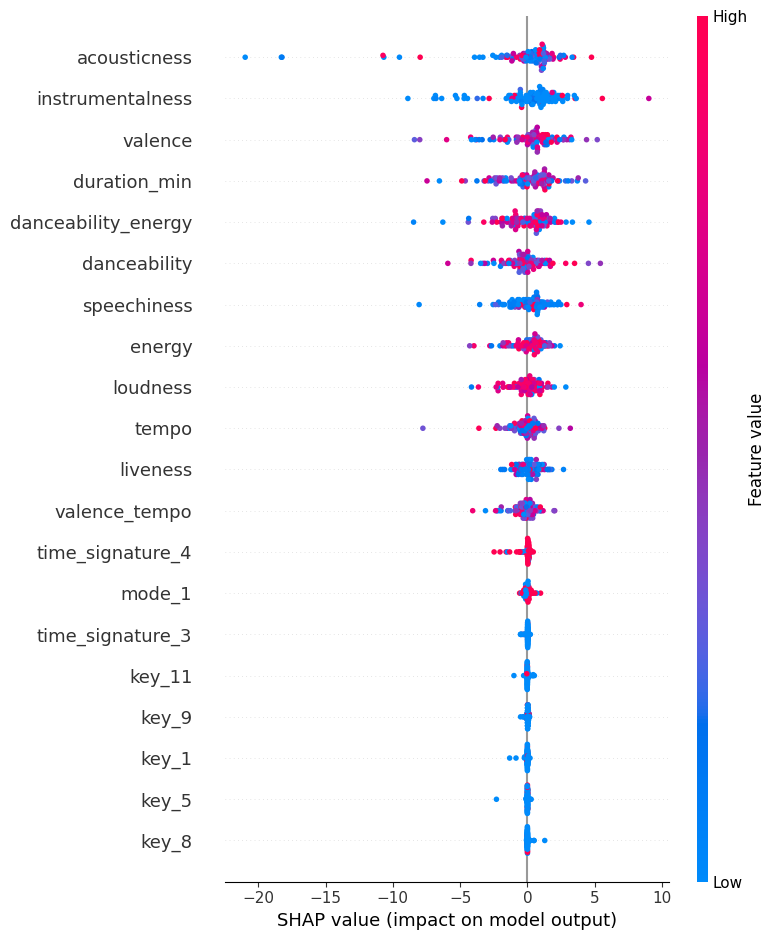
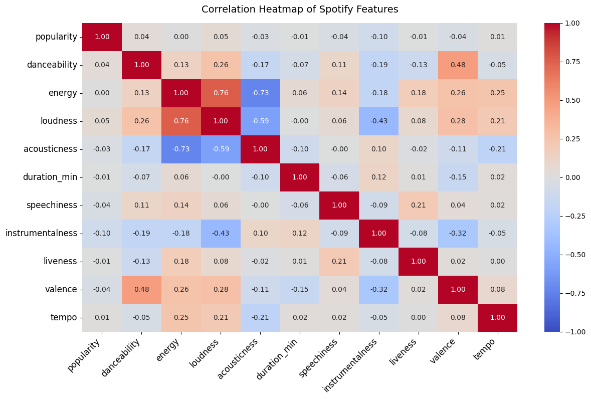

Spotify Music Analysis Dashboard
Explore Spotify music trends with interactive visualizations and ML insights.
Popularity vs. Danceability
Top Artists by Genre
Sample Data (No Filtered Results)
| Artist |
Popularity |
Danceability |
SHAP Explainability

Error: SHAP Summary Plot not found. Ensure assets/shap_summary.png exists.
Feature Correlations

Error: Correlation Heatmap not found. Ensure assets/correlation_heatmap.png exists.